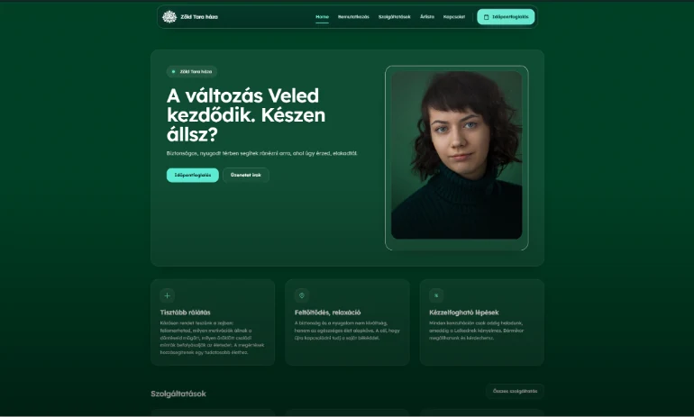

KRILIX
Tech & Labs
01
Munkáink
02
Szolgáltatások
03
Rólunk
04
Kapcsolat
hello@krilixtechlabs.com
Független digitális stúdió · Magyarország
KRILIX
Tech & Labs
☀️
VILÁGOS
HU
EN
DE
FELFEDEZÉS
MUNKÁINK
PROJEKTEK SZÁMA:
05
GÖRGESSEN LE
↓
01
Balaton Essence
balatonessence.com
ÉLŐ ELŐNÉZET
LIVE PREVIEW
Balaton Essence
Ha az élő előnézet itt nem tölt be, kattintással megnyílik az éles oldal.
↗
02
Silent Lake Látrány
silentlakelatrany.com
ÉLŐ ELŐNÉZET
↗
03
Zöld Tara Háza
zoldtarahaza.hu

↗
04
Lujdort az asztalos
lujdort-az-asztalos.com
ÉLŐ ELŐNÉZET
↗
05
INGSIGN
(katalógusok)
ingsign.com
ÉLŐ ELŐNÉZET
↗